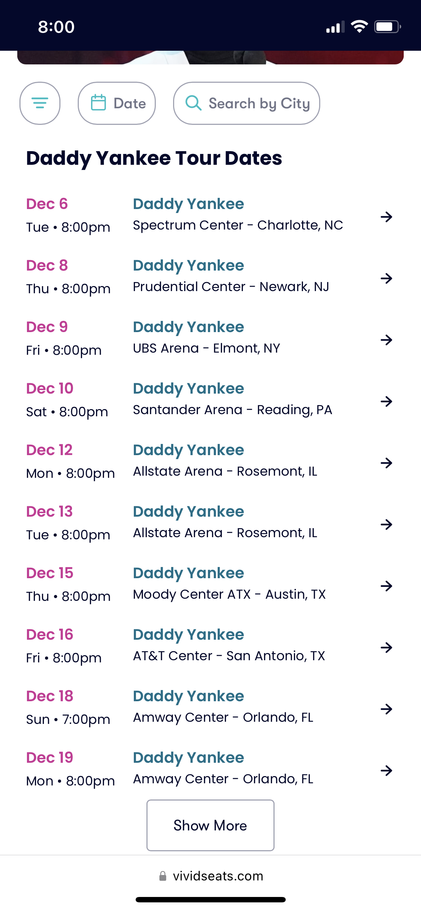

White Space & Clean Design
Vivid Seats
vividseats.com I believe this site uses white space well, the information is organized, easy to see and well spaced. I think this is important in all sites but especially so in sites like this one. I clicked on this site looking for very specific information and this design made it easy to find and to see everything important all at once and the lines of text are well lined up so its easy to match date with location. I believe this desing to be both visiually clean functional.
Alignment
Cobra Kai IMDb Photos
IMDb.com
I chose this site as my example of alignment because it follows the rules of thirds and all the image thumbnails are the exact same size, keeping the columns and rows clean. I also like that they were able to find and image size that balanced out visibility and numbers. Scrolling on my phone I am able to see several images and can clearly tell what each picture is showing.
Contrast
I chose Pinterest as my example of contrast becuase even though Pinterest is usually recognized by its red logo but the app and site content is black and white and when it comes to contrast there is no better combination. Pinterest keeps it's all its text in black at all points within the site making it easy to read againts the white background.